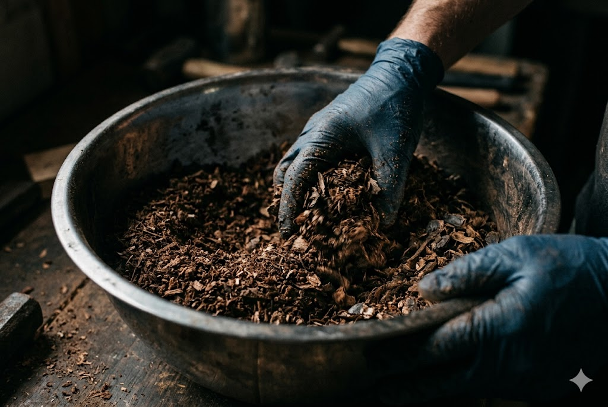
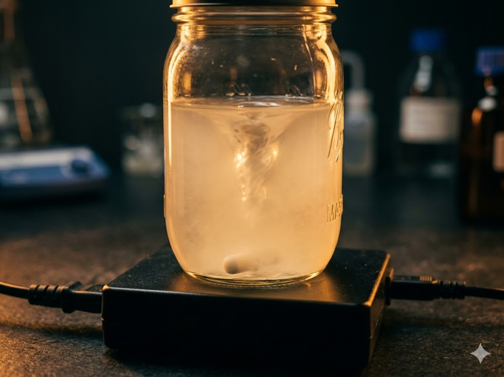
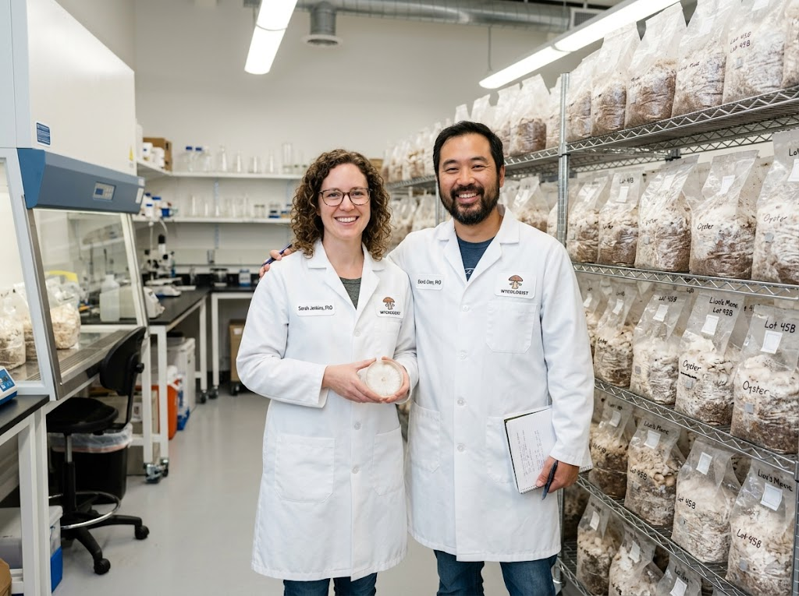
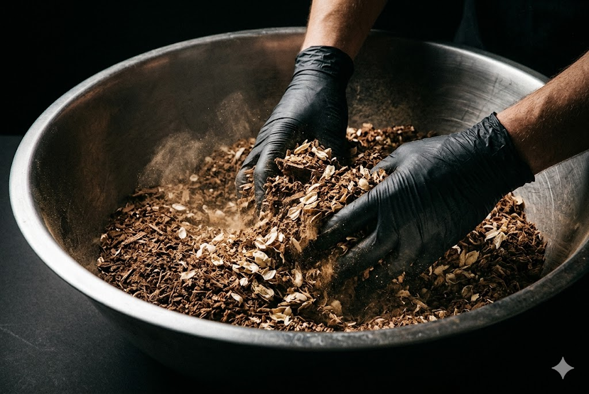
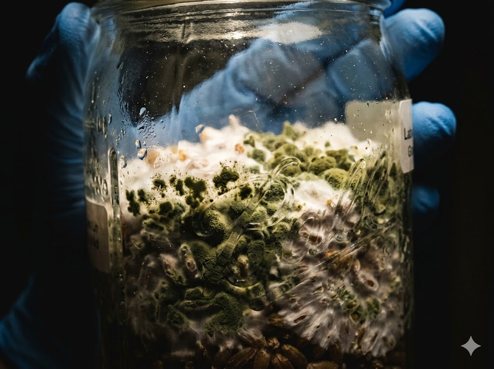
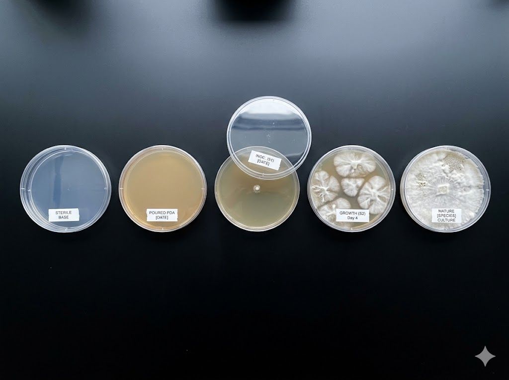
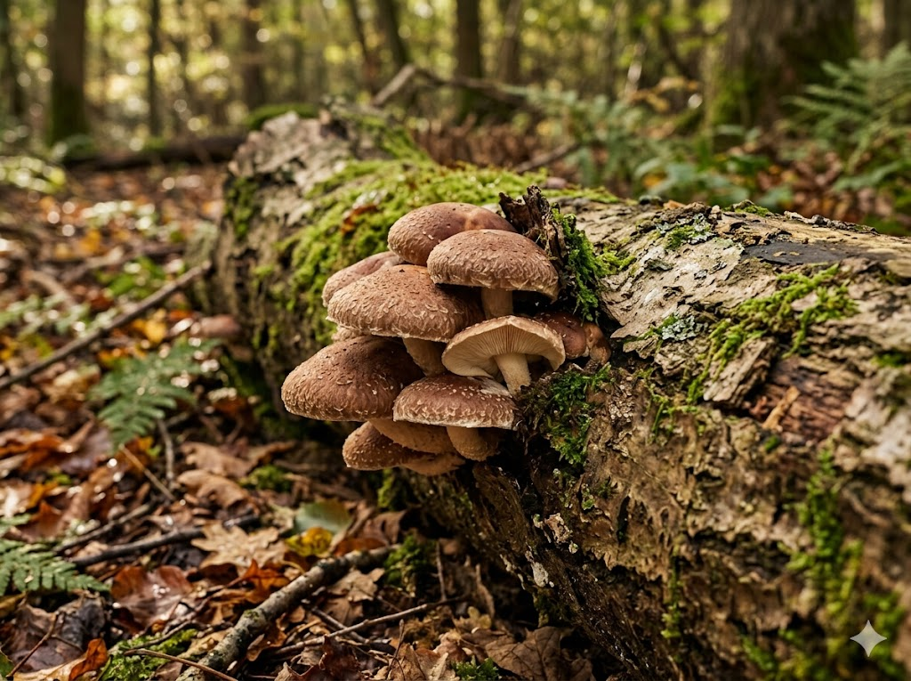

Perfecting the Hardwood Substrate Mix
Our definitive guide to formulating, hydrating, and sterilizing supplemented sawdust blocks for gourmet species like Shiitake and Lion's Mane.
Read ArticleDeep dives into mycology, cultivation recipes, farm updates and many many more news.

Our definitive guide to formulating, hydrating, and sterilizing supplemented sawdust blocks for gourmet species like Shiitake and Lion's Mane.
Read Article
How to expand your mycelium 100x using a simple nutrient broth and a magnetic stirrer.
Read More →
We've expanded our lab operations! Meet the mycologists behind our new spawn varieties.
Read More →
A controversial but effective way to prepare rye berries skipping the simmering step.
Read More →
Green, black, or pink fuzz? Learn to identify the 5 most common contaminants and stop them before they spread.
Read More →
Agar work sounds intimidating but it doesn't have to be. Here's the simplest possible workflow to get started.
Read More →
Skip the grow kit. A properly inoculated oak log will fruit Shiitake for up to 5 years with zero ongoing cost.
Read More →Everything you need to know before you start growing.
Oyster mushrooms — specifically Pearl or Blue Oyster — are by far the most beginner-friendly. They colonize fast, tolerate a range of temperatures, and fruit aggressively even in less-than-ideal conditions. Our Mushroom Cultivation 101 course covers everything you need to get your first flush in under 3 weeks.
The most common signs are green, black, or pink patches on your grain or substrate — these are mold colonies competing with your mycelium. A sour or unusual smell is another strong indicator. White fluffy growth is almost always healthy mycelium, but if it looks patchy, wet, or has color, pull it immediately. Check our contamination guide in the blog for a full visual reference.
No — most beginners start with a simple Still Air Box (SAB), which is just a clear tote with arm holes. It traps still air and dramatically reduces contamination risk during inoculation. A flow hood is a significant upgrade for serious growers doing agar work or large batch grain transfers, but it's absolutely not required to get your first few successful grows.
Our grain spawn is at peak viability on arrival and will remain healthy for up to 4 weeks when stored in a refrigerator between 35–45°F. Avoid freezing — this damages the mycelium. For best results, inoculate within the first week of receiving your order. All our spawn ships with a packing date so you always know exactly how fresh it is.